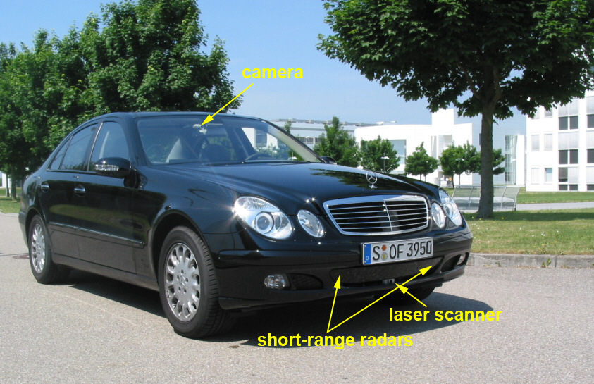
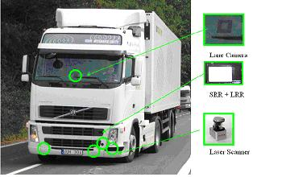
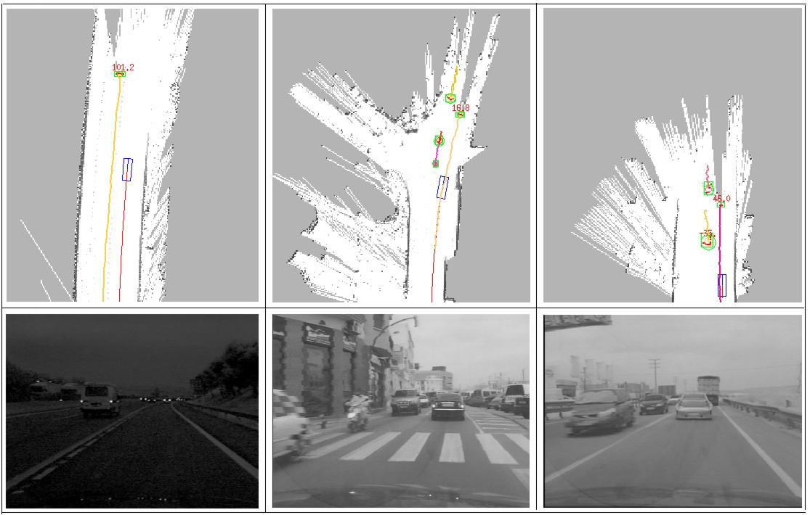
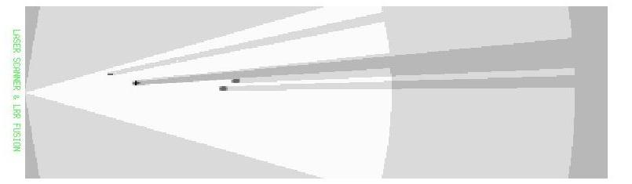

Last update: april 17th 2012
Project description
In the framework of the european IP PReVENT, we were involved in the project ProFusion [Tatschke06, Park06] which was in charge of designing and developping
a generic architecture for Perception Solutions for automotive applications. We
developped a solution based on occupancy grid and integrate this solution on two
demonstrators : a Daimler demonstrator and Volvo Truck demonstrator.
The project started in february 2004 and ended in august 2008 and had 50
partners.
Demonstrators
Daimler demonstrator

FIGURE 1: The Daimler demonstrator car
The Daimler demonstrator car is equipped with a camera, two short range
radar sensors and a laser scanner (Figure 1). The radar sensor is with a
maximum range of 30m and a field of view of 80 degre. The data of radar are processed
and it delivers a list of moving objects. The maximum range of laser sensor is 80m
with a field of view of 160 degre and a horizontal resolution of 1 degre. The laser data are not processed. In addition, vehicle odometry information such as velocity and yaw
rate are provided by the vehicle sensors. Images from camera are for visualization
purpose.
Volvo Truck demonstrator

FIGURE 2 : The Volvo Truck demonstrator car
The test vehicle platform is based on a Volvo FH12 420 Globetrotter truck
(figure 2). The main components of the perception system are (1) a laser
scanner, mounted in the front left corner of the truck. This sensor has a field of
view of 210 degre and a range of 80 meters, (2) a lane camera and vision system, (3) a
long range radar (LRR) system. This sensor has a field of view of 12 degre and a range
of 200 meters and (4) a short-range radar (SRR) system.
Moreover, data of each sensor are processed, and each sensor delivers a list of
moving objects present in the environment.
Experimental Results
Daimler demonstrator

FIGURE 3: Experimental results show that our algorithm can successfully
perform both SLAM and DATMO in real time for different environments
The SLAM and moving object detection contributions [VU07] were integrated on this demonstrator. The grid has a size 200m x 40m
and each cell has a size of 20 cms. Confirmation of detection of moving objects by
laser scanner is performed with the two short range radars. Regarding Tracking of
Moving Objects, we integrated an adaptative IMM [Burlet06b] associated with MHT algorithm for Data Association. A
description of this work could be found in [Vu10].
The detection and tracking results are shown in Figure 3. The images in the
first row represent online maps and objects moving in the vicinity of the vehicle
are detected and tracked. The current vehicle location is represented by blue box
along with its trajectories after correction from the odometry. The red points are
current laser measurements that are identified as belonging to dynamic objects.
Green boxes indicate detected and tracked moving objects with corresponding
tracks displayed in different colors. Information on velocities is displayed next
to detected objects if available. The second row are images for visual references to corresponding situations.
Videos
More results and videos can be found for SLAM + moving objects detection, SLAM + moving objects detection and fusion and SLAM + moving objects tracking.
Moreover, our solution has been validated in complex crash and non-crash
scenarios and compared with Daimler solution [Pietzsch09]. To conduct the experiments,
we built up a comprehensive database that consists of short sequences of
measurements recorded during predefined driving maneuvers. To measure the
quality, we counted the false alarms that occurred in non-crash scenarios and
the missed alarms in case a collision was not detected by the application. As a
general result it can be stated that a reliable collision detection is achieved with
both perception modules.Whereas Module of Daimler enables a lower false alarm
rate, the crash detection rate of our module is very high (98.1%) in urban areas.
Volvo Truck demonstrator

FIGURE 4: The sensors data fusion between long range radar and laser.
In [Garcia08], we model the environment perceived
by the set of sensors with an occupancy grid. We built a sensor model for each sensor in a way similar to what we did in puvame [Yguel06]. We also used an adaptative
IMM associated with MHT algorithm for Data Association,
similarly to what we did on the Daimler demonstrator.
The figure 4 illustrates the process of sensor fusion between long range
radar (LRR) and laser. The ego vehicle is located on the left. The white zone
corresponds to the fusion between the free zones of both fields of view of the
sensors. The only object detected by both sensors has a high probability of
occupancy and the area behind this object corresponds to occluded area. Other
objects (only detected by one sensor) have lower probabilities of occupancy than
the object detected by both sensors.
Video
A video on detection, tracking and fusion of moving objects could be found here.